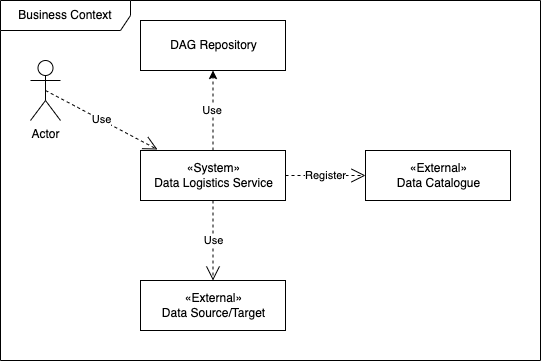

1. Introduction and Goals
Following describes the architecture of eFlows4HPC Data Logistics Service. The service provides scientific users with a means to prepare, conduct, and monitor data movement and transformations. The primary use case is to facilitate the data ingestion process.
Main features:
-
keep track of data sources (Data Catalog)
-
detect availability of new data in data sources
-
move the data from sources into target systems for further processing
-
monitor the movement and quality assurance
1.1. Requirements Overview
ID |
Requirement |
Explanation |
R1 |
Orchestrate movement of data to and from target locations |
Ensure that the data required for computation is moved from external repoistories to target locations |
R2 |
Transfer computation results |
Results of computations should be put in target repositories |
R3 |
Integrate user tools |
There are already some codes to download, upload, and do QA |
R4 |
Integrate new data sources and targets |
New sources and targets can be added at the later stage |
R5 |
Self-service |
In the long-term move from developers to data scientists |
1.2. Quality Goals
ID |
Prio |
Quality |
Explanation |
Q1 |
1 |
Performance/Reliablity |
Required data should be moved to target in a timely manner (accounting for retransfers upon errors) |
Q2 |
3 |
Extensibility/Interoperability |
New sources (up to 10 at the same time) and targets (model evolution) can be added. Integration with project ML libraries |
Q3 |
2 |
Transparency/Reproducibility |
Other researchers should be able to verify and redo the data movement and processing steps |
Q4 |
4 |
Elasticity |
Future changes in workfload should be accounted for |
2. Architecture Constraints
Constraint |
Explanation |
Local orientation |
The user shall have an impression of owning the local process and codes. The data should be brought to Data Logistics Service |
Python-compatible |
There are some modules and codes in Python and scripts, they should be reuse/integrated |
Reuse infra |
Take advantage of existing services (Splunk, Grafana, Jenkins, Gitlab) |
External developer |
Some of the code developed outside should be included in the transformation step, in not intrusible way |
3. System Scope and Context
3.1. Business Context

3.2. Technical Context
Mapping Input/Output to Channels
Scheduler → Worker: asynchornous though redis messaging
Worker → Data Source (real-time): HTTP-based, synchron
Worker → Data Source (initial replication): API (S3 for OpenAQ)
Worker → Local Store: API in first attempt, direct Postgres access could also be an option
Worker → Model Repository: HTTP API through CLI/ BashOperator
DAG Repository → {Workers, Scheduler}: Jenkins-based CI/CD pipeline with local Docker image repository
4. Solution Strategy
Fundamental decisions and solutions strategies.
4.1. Async Communication
We are not planning to address the streaming use-cases, thus the communication between scheduler and workers will be done async with a message bus. Airflow offers this.
This is one-leader async replication use-case.
4.2. Airflow
The pipelines in Airflow are defined in Python (rather than in special workflow language), in long term the data scientists should be able to create their own pipelines.
Airflow pipelines are executed on workflows but can interact with storages their in-storage processing capabilities. This can be beneficial when moving to Spark for more performance-requiring jobs.
4.3. "Pure functions" workflows
The idea is to build the workflows as pure functions, no orthogonal concerns should be included (invocation/scheduling/input-output locations). The primary reason for this is the testablility outside of Airflow.
Also the idea of the functions is to achieve idempotentce. In case we have to rerun the pipeline, the results should be the same, e.g., a measurement series is recreated rather than new measurements are added. Motivation for this the ability to re-run the workflows. Also relevant for continuous deployment. If some tasks are lost, we can restart them. In worst case, the work will be done twice.
In general, we want to have a possibility to recreate full data sets.
4.4. Deployment with Jenkins
Reuse our CD infrastructure. See [Deployment] for more details.
5. Building Block View
5.1. Data Logistics UI
Web service offering view of the defined pipelines, execution details, performance metrics. Also offers view of the data sources. The view can be extended with plugins.
Interfaces Primary interface is the web view, but there is also CLI used for deployment and defining data sources.
Fulfilled Requirements
-
Self-service (to some extend)
Qualities:
-
Monitoring/Transparency
Extensibility: DAG in Python
Open Issues/Problems/Risks
For the proper working it requires to have DAGs injected (locally). This becomes an issue
when DAGs use e.g. PythonOperators and thus require additional libraries for the runtime.
Either built the pipelines in such a way that this is not necessary (imports) or rebuild
the UI on each change (here again conflicts).
5.2. Data Logistics Scheduler + Executor
Not directly accessible to the users. It keeps track of scheduling tasks on workers. Require connection to workers (can be indirect through messaging system). Also keeps track of the executions (through metadata store) and restarts failed tasks.
Interfaces Stand-alone system, read DAGs (local) and metadata store to find out if new instantiations are required. The communication with Workers uses two queuing backends:
-
Queue Broker (put the commands to be executed)
-
Result backend (gets the status of the completed tasks)
Multi queue deployment for initial snap shot and updates.
t3 = BashOperator( task_id='print_host', bash_command='hostname >> /tmp/dag_output.log', queue='local_queue', dag=dag)
Fulfilled Requirements
Quality:
-
Extensibility
-
Elasticity
Open Issues/Problems/Risks To some extend the scheduler is a single point of failure. It is relative hard to restart upon rebuild.
Not so stateless.
5.3. Data Logistics Worker
Workers are responsible for executing task from pipelines. The instantiate the operators of different type. Operators that are executed on the worker need to have their dependencies met in that context. The worker needs to have access to its DAGS_FOLDER, and you need to synchronize the filesystems by your own means. We use git for that.
The number of workers can be changed to enable some elasticity in the system.
Operator scaffoldings.
Interfaces Not directly accessible to the users. The commands are received from scheduler (through) messaging system. Workers get task execution context and can access MD to get information about required connections (directly from MD DB).
Each worker can listen on multiple queues of tasks. This can be used if the workers are heterogeneous, e.g., separate queue for Spark jobs or differentiate between different loads.
The workers do not communicate directly with each other. Small amounts of data can be exchanged through 3rd party in form of XCOM. Tested to work with a shared storage, can be an option for deployment.
The worker offers and interface to access log files this is used by the UI.
Quality/Performance Characteristics
-
Integrate user tools
-
New sources
Extensibility: multiple workers, multiple queues
Interoperability: Operators to access new data sources
Self-service: possiblity to create and publish own pipelines
5.4. DAG Repo
This repo will store the information about the pipelines in form of DAGs. The pipeline definition comprises: code (in Python), dependencies (if required), config metadata (frequency, backfill, etc).
To store, share, etc we use DAG Repo to store locally available GitLab of the requester research group.
For some parts of DAG we will have unittests.
The deployment of the DAGs is done through the Continuous Deployment gitlab.
Interfaces Standard gitlab access.
Fulfilled Requirements Extensibility, Self-service
6. Runtime View
6.1. Scheduling
6.2. Deployment